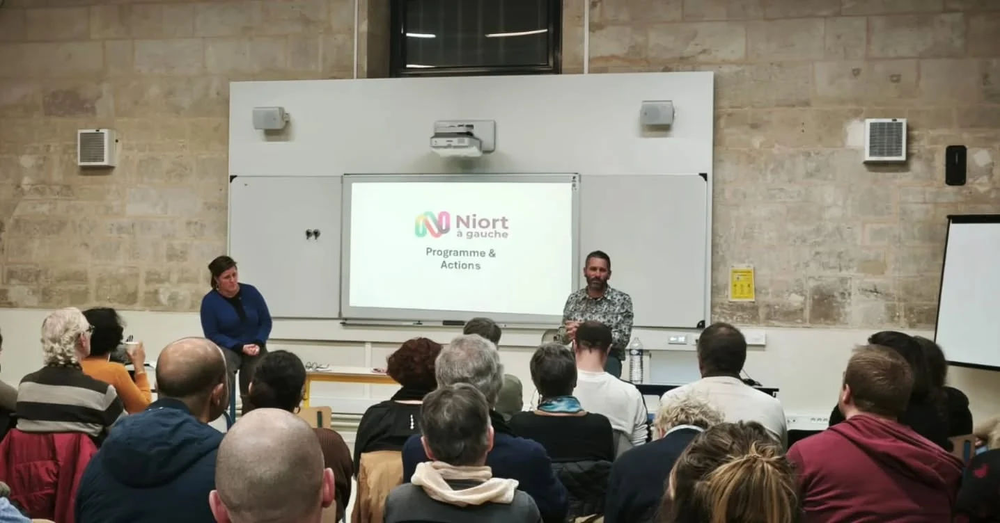
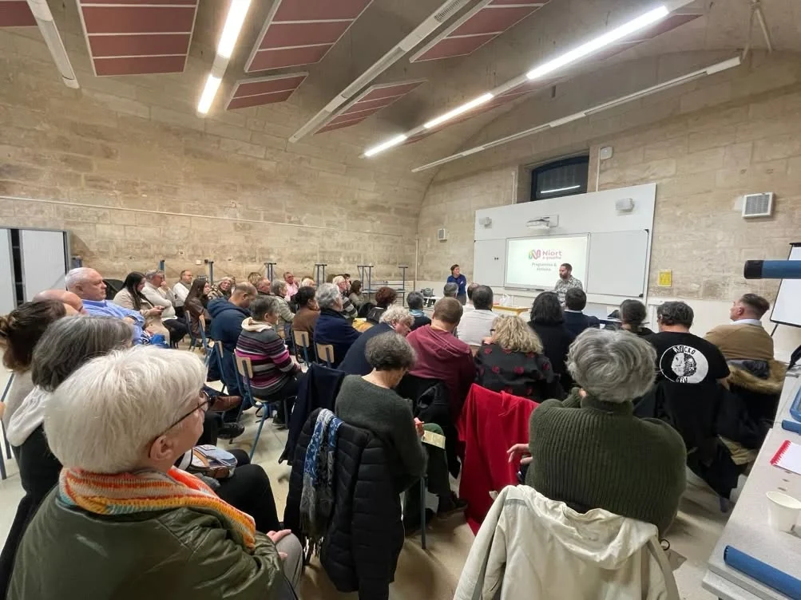

Compte rendu relayé
Une première réunion pour préparer la campagne de Niort à gauche
Date de mise à jour indiquée par Facebook · 11 décembre 2025
Repères éditoriaux
Niort à gauche a réuni ses militants pour échanger sur le programme et préparer ses actions, dont une première réunion publique annoncée pour janvier.
Texte de la publication · Niort à gauche
Salle comble pour la première réunion des militants de Niort à gauche : programme, échanges, actions et préparation de la première réunion publique prévue en janvier.
#electionsmunicipales2026 #NiortAGauche #niort


Sources
Niort à gauche · publication relayée par le PCF 79 · bibliothèque Facebook · AR-0002-FB-00933
À lire aussi · Niort à gauche. Six rencontres citoyennes en janvier 2026